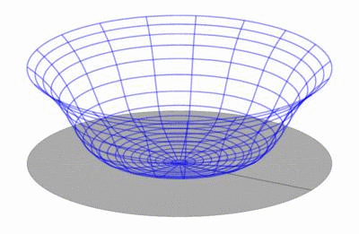
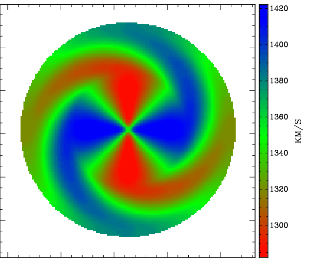

This chapter describes how TiRiFiC creates a model data cube from the model parameters entered. The output of such a model data cube is achieved using the parameter OUTSET explained in the chapter Output. After a short introduction to the intrinsic Coordinate system, a short description of the TiRiFiC geometrical model is given, listing all model parameters, to then provide a detailed mathematical description of the model. We end this page with a short list of all geometric parameters discussed on this page.
| Fig. 1: the Tirific coordinate system is a right-handed Cartesian coordinate system with the first axis pointing to the North, second axis pointing to the East, and the third axis pointing toward the observer. A (sub-) ring of rotating material appears as an ellipse on the sky, determined by position angle (angle between North, origin, and receding half major axis of the projected ellipse) and inclination. | |
| Fig. 2: a TiRiFiC model is the result of multiple coordinate transformations of a cloud of point sources originally distributed along a face-on circle with a counterclockwise sense of rotation. The initial coordinates of the point source are determined by the azimuthal angle, or azimuth (az/i> φ), the (projected) radius R (in arcsec), and the height above the plane Z (positive in the direction of the observer, measured in the observed reference system, in arcsec). Among other operations, the position of each point source is changed via a rotation about the North-axis (first axis) with the inclination and a subsequent rotation about the LOS axis by an angle of 180°+position angle (this rather strange transformation is chosen to conform with the GIPSY definition of the position angle). | |
The TiRiFiC coordinate system is conforming with the IAU or IEEE conventions (in principle for polarimetry, but also generally, see Hamaker & Bregman 1996). The Cartesian reference system is defined with the first (x-) axis pointing towards North, the second (y-) axis pointing towards East, and the third (z-) axis pointing towards the observer. The reference frame in velocity is parallel to the spatial grid. This implies that intriniscally positive velocity differences along the line-of-sight imply a negative difference in recession velocity and vice versa. Spatial units are entered by the user in units of seconds of arc, velocity units are km/s, angles are entered in units of degrees. The appropriate sub-ring-based cylindric coordinate system is defined with the radius R (in arcseconds), the azimuth φ (in radians), and the height above the (xy-) plane Z (in arcseconds). A positive tangential velocity is defined as a counterclockwise rotation in the NE (xy-) plane, a positive radial velocity outwards from the origin. Figures 1 and 2 reflect the TiRiFiC geometry and define the single reference systems. For a face-on view prior to rotation the coordinate systems transform via
| (1) | x(R, φ, Z) | = | x1(R, φ, Z) | = | cos(φ) | , where |
| y(R, φ, Z) | = | x2(R, φ, Z) | = | sin(φ) | ||
| z(R, φ, Z) | = | x3(R, φ, Z) | = | Z | ||
| Vx(R, φ, Z, VR, Vφ, VZ) | = | V1(R, φ, Z, VR, Vφ, VZ) | = | VRcos(φ)-Vφsin(φ) | ||
| Vy(R, φ, Z, VR, Vφ, VZ) | = | V2(R, φ, Z, VR, Vφ, VZ) | = | VRsin(φ)+Vφcos(φ) | ||
| Vz(R, φ, Z, VR, Vφ, VZ) | = | V3(R, φ, Z, VR, Vφ, VZ) | = | VZ |
VR denotes the radial velocity (dR/dt, outwards positive), Vφ the tangential ("rotational") velocity (Rdφ/dt), positive counterclockwise, and VZ the vertical velocity component (dZ/dt). The azimuthal angle φ is measured in radians and the arguments of the trigonometric functions are in radians. In the scope of constructing a model pointsource cloud, TiRiFiC follows a step-by-step generation- and coordinate transformation of point sources. We first give a quick description, which can be used as a quick reminder, and then a detailed one. We append a complete list of parameters at the bottom.
| Name | Category | Unit | Description |
| NUR | Geometrical (required) | Number of grid nodes (ring radii) | |
| RADI | Geometrical (required) | arcsec | List of grid nodes (ring radii) |
| RADSEP | Geometrical (required) | pixel | Separation of sub-grids (sub-rings) |
| RADSEP_i | Geometrical (required) | pixel | Separation of sub-grids (sub-rings), ith disk, i = 2, 3, ... |
| INTY | Geometrical (default 0) | Interpolation scheme for sub-grid (sub-ring) parameters; 0: linear, 1: natural cubic spline, 2: natural Akima | |
| More Details | |||
Tirific constructs a tilted ring model of a number of disks. The user specifies the number of radial nodes on which the model parameters are defined by the user or changed during the fitting process with the parameter NUR and provides a set of exactly NUR node positions (ring radii in arcsec) with the parameter RADI. The first node has always the radius 0, but is still required to be explicitly specified by the user. For every disk, the nodes have the same values and are thus given once for all disks. All further radius-dependent parameters are defined by the user or are fitted at the given radial nodes, i.e., for a parameter PAR, the user specifies directly or indirectly NUR numbers, hence defining the parameter PAR at each node (in the same order as RADI). For any given geometrical parameter apart from RADI, defaults are defined. Furtherly, the values at larger raii default to the last given number. Intrinsically, the parameters are calculated on small "sub-rings" via interpolation. The type of interpolation between the radial nodes is controled with the parameter INTY. The user has the choice between linear interpolation (INTY=0, default), natural cubic spline (INTY=1), and non-rounded Akima interpolation with natural boundary conditions (INTY=2). Computationally, linear interpolation is the cheapest, followed by Akima, with cubic spline being the most expensive interpolation. The width and the separation of the subrings are identical and specified by the user using the parameter RADSEP, which defined the width of a sub-ring in units of pixels in spatial direction (which are assumed to have the same spatial extent in all directions). With RADSEP, the sub-ring separation of the first disk is fixed, with RADSEP_i the sub-ring separation of consecutive disks (i = 2, 3, ...) is specified. A detailed description of the parameter sampling can be found here. See also section modelling strategy.
| Name | Category | Unit | Description |
| ISEED | Geometrical (default 1803) | Seed for random-number generator | |
| More Details | |||
TiRiFiC uses a deterministic random number generator to generate point sources. This random number generator is initialised using the parameter ISEED, which accepts values from 0 to 31328. For a given ISEED, TiRiFiC will produce the same model in two consecutive runs with the same input parameters.
| Name | Category | Unit | Description |
| NDISKS | Geometrical | Number of disks | |
| More Details | |||
TiRiFiC allows for the definition of multiple disks. The number of disks is defined with the parameter NDISKS and defaults to a number determined by the user at compile time. Parameters which need to be defined per disk are assigned via an underscore "_" followed by the disk number, as described for each parameter.
For each radius the user has the possibility to define a constant surface brightness, and large-scale (harmonic) and small scale distortions along a ring, as well as to omit regions along a ring. For a detailed mathematical description see here.
| Name | Category | Unit | Description |
| SBR | Geometrical (default 0) | Jy km s-1 arcsec-2 | Constant surface brightness |
| SBR_i | Geometrical (default 0) | Jy km s-1 arcsec-2 | Constant surface brightness, ith disk, i = 2, 3, ... |
| More Details | |||
For each disk the user defines the constant surface brightness in units of Jy km s-1 arcsec-2 at each radial node (for each ring). For the first disk this is done via the parameter SBR, for further disks, via the parameter SBR_i, where i = 2, 3, ... . The default for SBR and SBR_i is 0.
| Name | Category | Unit | Description |
| SMkA | Geometrical (default 0) | Jy km s-1 arcsec-2 | Amplitude of harmonic surface-brightness distortion kth order (k = 1, ..., 4) |
| SMkP | Geometrical (default 0) | degrees | Phase of harmonic surface-brightness distortion kth order (k = 1, ..., 4) |
| SMkA_i | Geometrical (default 0) | Jy km s-1 arcsec-2 | Amplitude of harmonic surface-brightness distortion kth order (k = 1, ..., 4), ith disk, i = 2, 3, ... |
| SMkP_i | Geometrical (default 0) | degrees | Phase of harmonic surface-brightness distortion kth order (k = 1, ..., 4), ith disk, i = 2, 3, ... |
| More Details | |||
| Fig. 3: Left: surface brightness distribution of a disk model employing a mixture of an m = 0 and m = 1 (azimuthal) harmonics in surface brightness. Right: parametrisation of surface brightness. Top curve: (azimuthally) constant surface brightness (mode 0, SBR) in dependence of radius. Middle curve: amplitude of first order azimuthal variation (mode 1, SM1A) in dependence of radius. Bottom curve: phase of first order azimuthal variation (mode 1, SM1P) in dependence of radius. | ||
In addition to the constant surface brightness, the user defines for each disk the amplitudes and phases for additional sinusoidal variations in surface brightness in dependence of the (face-on) azimuthal angle. The user defines the amplitudes via the parameters SMkA (defaulting to 0), where k = 1, ..., 4 denotes the number of maxima along a ring. For an inclination between -90° and 90°, the (first) maxima are shifted counterclockwise by an angle with respect to the approaching side major axis by the angles (phases) SMkP (default: 0), where k = 1, .., 4 corresponds to the sinusoidal distortions of order 1, ..., 4. Hence, TiRiFiC enables the user of a harmonic decomposition in surface brightness up to the 4th order (SBR denoting the 0th order harmonics). For further disks, the corresponding amplitudes and phases of the harmonic distortions in surface brightness are defined using the parameters SMkA_i and SMkP_i.
| Name | Category | Unit | Description |
| GAkA | Geometrical (default 0) | Jy km s-1 arcsec-2 | Amplitude of kth Gaussian surface-brightness distortion (k = 1, ..., 4) |
| GAkP | Geometrical (default 0) | degrees | Phase of kth Gaussian surface-brightness distortion (k = 1, ..., 4) |
| GAkD | Geometrical (default 0) | arcsec | Dispersion of kth Gaussian surface-brightness distortion (k = 1, ..., 4) |
| GAkA_i | Geometrical (default 0) | Jy km s-1 arcsec-2 | Amplitude of kth Gaussian surface-brightness distortion (k = 1, ..., 4), ith disk, i = 2, 3, ... |
| GAkP_i | Geometrical (default 0) | degrees | Phase of kth Gaussian surface-brightness distortion (k = 1, ..., 4), ith disk, i = 2, 3, ... |
| GAkD_i | Geometrical (default 0) | arcsec | Dispersion of kth Gaussian surface-brightness distortion (k = 1, ..., 4), ith disk, i = 2, 3, ... |
| More Details | |||
| Fig. 4: Left: surface brightness distribution of a disk model employing a mixture of a constant surface brightness distribution and a Gaussian distortion. Right: parametrisation of Gaussian distortion. Top curve: amplitude of distortion (GA1A) in dependence of radius. Middle curve: phase of distortion (GA1P) in dependence of radius. Bottom curve: dispersion of Gaussian (GA1D in arcsec). | ||
Furtherly, the user defines Gaussian distortions along rings (in dependence of the azimuthal angle). Per disk and ring up to 4 Gaussian distortions can be added, with for the first disk GAkA (k = 1, ..., 4) being the maxima in surface brightness (default: 0), GAkP (k = 1, ..., 4) the the corresponding positions of the maxima in azimuth, (for inclinations between -90° and 90°) with respect to the approaching side major axis (default: 0), and GAkD (k = 1, ..., 4) the dispersions in units of arcsec (not degrees; default: 0). For further disks the corresponding parameters are called GAkA_i, GAkP_i, and GAkD_i, k = 1, ..., 4, i = 2, 3, ... .
| Name | Category | Unit | Description |
| AZkP | Geometrical (default 0) | degrees | Central positions of modelled azimuthal range (k = 1, 2) |
| AZkW | Geometrical (default 0) | degrees | Width of modelled azimuthal range (k = 1, 2) |
| AZkP_i | Geometrical (default 0) | degrees | Central positions of modelled azimuthal range (k = 1, 2), ith disk, i = 2, 3, ... |
| AZkW_i | Geometrical (default 0) | degrees | Width of modelled azimuthal range (k = 1, 2), ith disk, i = 2, 3, ... |
| More Details | |||
 |
||
| Fig. 5: Left: surface brightness distribution of a disk model restricting the azimuthal range in two regions. Right: parametrisation of the azimuthal ranges. Top curve: position of first wedge. Second curve from top: width of first wedge. Second curve from bottom: position of second wedge. Bottom curve: width of second wedge. | ||
Finally, the user supplies up to two (face-on) azimuthal ranges per radial grid position (per ring radius), within which the model is generated. For the first disk, the user specifies two azimuthal angles AZ1P and AZ2P and the corresponding widths of the selected wedges AZ1W and AZ2W. The model will only be generated within the selected azimuthal ranges. Origin is (for an inclination between -90° and 90°) the approaching side projected major axis of the ring in question. All parameters default to 0. If the width of a wedge is 0 (AZ1W and AZ2W), then no corresponding wedge is selected (no selection in azimuthal range takes place). For the second, third, etc. disks, the parameters AZ1P_i, AZ2P_i, AZ1W_i, and AZ2W_i (i = 2, 3, ...) have the same fuction. A common application of this possibility is to model two halves of a disk with (partly) differing parametrisations. The user defines two disks with nearly identical parameters (e.g. central coordinates are identical) to then define AZ1P = 0, AZ1W = 180, AZ1P_2 = 180, AZ1W_2 = 180. This means that only half a disk is modelled for the first disk (approaching side), and half a disk is modelled for the second disk (receding side), which may be completely different, but which may also share the same parameters (it is possible to fit a common centre for both halves).
| Name | Category | Unit | Description |
| LTYPE | Geometrical (default 0) | Vertical density distribution: 0: constant, 1: Gaussian, 2: sech2, 3: exponential, 4: Lorentzian | |
| Z0 | Geometrical (default 0) | arcsec | Thickness of disk |
| LTYPE_i | Geometrical (default 0) | Vertical density distribution: 0: constant, 1: Gaussian, 2: sech2, 3: exponential, 4: Lorentzian, ith disk, i = 2, 3, ... | |
| Z0_i | Geometrical (default 0) | arcsec | Thickness of disk, ith disk, i = 2, 3, ... |
| More Details | |||
In a next step, to characterise the disk thickness, the user defines a scale law with the parameter LTYPE and the thickness of the first disk following that scale law with the parameter Z0 (in arcsec). The detailed functional forms of the scale laws can be found here. For every further disk, the corresponding quantities are specified with the parameters LTYPE_i and Z0_i (i = 2, 3, ...).
| Name | Category | Unit | Description |
| VROT | Geometrical (default 0) | km s-1 | Mid-plane Rotation velocity |
| ROkA | Geometrical (default 0) | km s-1 | Amplitude of harmonic tangential ("rotation") velocity kth order (k = 1, ..., 4), first disk |
| ROkP | Geometrical (default 0) | degrees | Phase of harmonic tangential ("rotation") velocity kth order (k = 1, ..., 4), first disk |
| DVRO | Geometrical (default 0) | km s-1 arcsec-1 | Vertical gradient of rotation velocity |
| ZDRO | Geometrical (default 0) | arcsec | Onset height above plane for change in rotation velocity |
| VRAD | Geometrical (default 0) | km s-1 | Mid-plane radial velocity (outwards positive) |
| RAkA | Geometrical (default 0) | km s-1 | Amplitude of harmonic radial velocity kth order (k = 1, ..., 4), first disk |
| RAkP | Geometrical (default 0) | degrees | Phase of harmonic radial velocity kth order (k = 1, ..., 4), first disk |
| DVRA | Geometrical (default 0) | km s-1 arcsec-1 | Vertical gradient of radial velocity |
| ZDRA | Geometrical (default 0) | arcsec | Onset height above plane for change in radial velocity |
| VVER | Geometrical (default 0) | km s-1 | Mid-plane vertical velocity |
| DVVE | Geometrical (default 0) | km s-1 arcsec-1 | Vertical gradient of vertical velocity |
| ZDVE | Geometrical (default 0) | arcsec | Onset height above plane for change in vertical velocity |
| VROT_i | Geometrical (default 0) | km s-1 | Mid-plane Rotation velocity, ith disk, i = 2, 3, ... |
| ROkA_i | Geometrical (default 0) | km s-1 | Amplitude of harmonic tangential ("rotation") velocity kth order (k = 1, ..., 4), ith disk, i = 2, 3, ... |
| ROkP_i | Geometrical (default 0) | degrees | Phase of harmonic tangential ("rotation") velocity kth order (k = 1, ..., 4), ith disk, i = 2, 3, ... |
| DVRO_i | Geometrical (default 0) | km s-1 arcsec-1 | Vertical gradient of rotation velocity, ith disk, i = 2, 3, ... |
| ZDRO_i | Geometrical (default 0) | arcsec | Onset height above plane for change in rotation velocity |
| VRAD_i | Geometrical (default 0) | km s-1 | Mid-plane radial velocity (outwards positive), ith disk, i = 2, 3, ... |
| RAkA_i | Geometrical (default 0) | km s-1 | Amplitude of harmonic radial velocity kth order (k = 1, ..., 4), ith disk, i = 2, 3, ... |
| RAkA_i | Geometrical (default 0) | degrees | Phase of harmonic radial velocity kth order (k = 1, ..., 4), ith disk, i = 2, 3, ... |
| DVRA_i | Geometrical (default 0) | km s-1 arcsec-1 | Vertical gradient of radial velocity, ith disk, i = 2, 3, ... |
| ZDRA_i | Geometrical (default 0) | arcsec | Onset height above plane for change in radial velocity |
| VVER_i | Geometrical (default 0) | km s-1 | Mid-plane vertical velocity, ith disk, i = 2, 3, ... |
| DVVE_i | Geometrical (default 0) | km s-1 arcsec-1 | Vertical gradient of vertical velocity, ith disk, i = 2, 3, ... |
| ZDVE_i | Geometrical (default 0) | arcsec | Onset height above plane for change in vertical velocity |
| More Details | |||
| Fig. 6: Signatures of a noncircular velocity structure, as can be constructed with TiRiFiC Left: Velocity field of a rotating disk with additional radial motion. The typical signature is a tilt of the isovelocity contours with respect to the geometrical principal axes. Middle: Positon-velocity diagram along the major axis (blue line in left image) for a thick disk with a vertical gradient in rotation velocity (pink) compared to a position-velocity diagram without the gradient (blue). Right: Positon-velocity diagram along the major axis (blue line in left image) for a thick disk with a vertical velocity component (pink) compared to a position-velocity diagram without vertical motion (blue). | |||
The user defines the velocity structure of the disk by assigning a rotation velocity VROT, its azimuthal harmonics up to 4th order (k = 1, ..., 4) via amplitudes ROkA and phases ROkP, a radial velocity VRAD, , its azimuthal harmonics up to 4th order (k = 1, ..., 4) via amplitudes RAkA and phases RAkP, and a vertical velocity VVER (perpendicular to the disk) in the central plane of the disk, and gradients of VROT, VRAD, and VVER (linear terms): DVRO, DVRA, and DVVE. In addition onset heights above the plane ZDRO, ZDRA, and ZDVE can be defined. Until the given onset heights are reached, the single velocities stay constant with height above the mid-plane, and start to decrease linearly with the given gradients with increasing height above the mid-plane. The quantities are given for each disk, with the disk number assigned by adding an _i to the parameter, i = 2, 3, ... .
In the most common application, a simple tilted-ring model, the user will choose all velocity paramters to be zero (i.e. ignore them completely), except for VROT, the rotation velocity. Less common applications will probably include a radial component VRAD, as well as second-order harmonics RO2A, RO2P, RA2A, and RA2P to implement simplified bar streaming using the prescription of Spekkens & Sellwood (2007), as realised in the diskfit velocity field (and total-intensity) analysis software (see also Schoenmakers (1999)), as in detail described below.
| Name | Category | Unit | Description |
| WM0A | Geometrical (default 0) | arcsec | Amplitude of harmonic vertical displacement 0th order: constant vertical displacement |
| WMkA | Geometrical (default 0) | arcsec | Amplitude of harmonic vertical displacement kth order (k = 1, ..., 4) |
| WMkP | Geometrical (default 0) | degrees | Phase of harmonic vertical displacement kth order (k = 1, ..., 4) |
| WM0A_i | Geometrical (default 0) | arcsec | Amplitude of harmonic vertical displacement 0th order: constant vertical displacement, ith disk, i = 2, 3, ... |
| WMkA_i | Geometrical (default 0) | arcsec | Amplitude of harmonic vertical displacement kth order (k = 1, ..., 4), ith disk, i = 2, 3, ... |
| WMkP_i | Geometrical (default 0) | degrees | Phase of harmonic vertical displacement kth order (k = 1, ..., 4), ith disk, i = 2, 3, ... |
| More Details | |||
|  | ||
| Fig. 8: Harmonical decomposition of vertical distortions. A vertical shift in dependence of the azimuthal angle φ can be decomposed into a Fourier series, the first orders of which can be reconstructed to approximate the vertical excursions of a disk. The result is a sum of modes as shown here (from top to bottom 0th order, 1st order, 2nd order). | ||
 |
||
| Fig. 7: Parametrisation of two warp modes. The resulting total intensity map shows a mixture of an m=0 mode (Fourier component of 0th order) and an m=1 mode (Fourier component 1st order) and appears asymmetric (as real disks quite commonly do). | ||
The user defines in a next step a vertical displacement with the possibility to construct warps of a complex geometry. The user defines for each disk the amplitudes and phases for additional sinusoidal variations in height above the plane in dependence of the (face-on) azimuthal angle. The user defines the amplitudes via the parameters WMkA (defaulting to 0), where k = 1, ..., 4 denotes the number of maxima along a ring. For an inclination between -90° and 90°, the (first) maxima are shifted counterclockwise by an angle with respect to the approaching side major axis by the angles (phases) WMkP (default: 0), where k = 1, .., 4 corresponds to the sinusoidal distortions of order 1, ..., 4. Hence, TiRiFiC enables the user of a harmonic decomposition of the height above a principal plane up to the 4th order (WM0A denoting the 0th order harmonics or constant displacement). For further disks, the corresponding amplitudes and phases of the harmonic distortions in height above the plane are defined using the parameters WMkA_i and WMkP_i (i = 2, 3, ...).
| Name | Category | Unit | Description |
| INCL | Geometrical (default 0) | degrees | Inclination |
| INCL_i | Geometrical (default 0) | degrees | Inclination, ith disk, i = 2, 3, ... |
| More Details | |||
In a next step, the first model disk is tilted by the angle INCL about the x-axis (pointing to the North), further disks are tilted by the angles INCL_i, i = 2, 3, ... .
| Name | Category | Unit | Description |
| LC0 | Geometrical (default 0) | arcsec | Shift along the projected major axis |
| LS0 | Geometrical (default 0) | arcsec | Shift along the projected minor axis |
| LC0_i | Geometrical (default 0) | arcsec | Shift along the projected major axis, ith disk, i = 2, 3, ... |
| LS0_i | Geometrical (default 0) | arcsec | Shift along the projected minor axis, ith disk, i = 2, 3, ... |
| More Details | |||
| Fig. 9: Applying a shift along the projected major axis. Left: Parametrisation including a shift along the major axis (parameter LC0). Middle: Correspondig "lopsided" appearance of the total intensity. Right: Corresponding position-velocity diagram along the blue line in the middle panel. | |||
In a next step, the first model disk is shifted by LC0 arcsec in the direction of the major axis of the projected ring and by LS0 arcsec in the direction of the minor axis of the projected ring. about the x-axis (pointing to the North), further disks are shifted by LC0_i andLS0_i (arcsec), i = 2, 3, ... .
| Name | Category | Unit | Description |
| VM0A | Geometrical (default 0) | km s-1 | Amplitude of harmonics in LOS velocity 0th order: constant shift in velocity |
| VMkA | Geometrical (default 0) | km s-1 | Amplitude of harmonics in LOS velocity kth order (k = 1, ..., 4) |
| VMkP | Geometrical (default 0) | degrees | Phase of harmonics in LOS velocity kth order (k = 1, ..., 4) |
| VM0A_i | Geometrical (default 0) | km s-1 | Amplitude of harmonics in LOS velocity 0th order: constant shift in velocity |
| VMkA_i | Geometrical (default 0) | km s-1 | Amplitude of harmonics in LOS velocity kth order (k = 1, ..., 4) |
| VMkP_i | Geometrical (default 0) | degrees | Phase of harmonics in LOS velocity kth order (k = 1, ..., 4) |
| More Details | |||
|  | |||
| Fig. 10: Line-of-sight velocity harmonics. Left: Parametrisation including a second-order harmonic term in the line-of-sight velocity (parameters amplitude VM2A and phase VM2P). Middle: A face-on-disk was constructed, the image shows the total-intensity map. Right: Velocity field resulting from the m=2 mode only (since the disk is face-on). | |||
The user defines for each disk the amplitudes and phases for additional sinusoidal variations of the velocity along the line-of-sight (LOS) after tilting to inclination in dependence of the (face-on) azimuthal angle (this way even a face-on ring can have a velocity signature, e.g. showing precession). The user defines the amplitudes via the parameters VMkA (defaulting to 0), where k = 0, 1, ..., 4 denotes the number of maxima along a ring. For an inclination between -90° and 90°, the (first) maxima are shifted counterclockwise by an angle with respect to the approaching side major axis by the angles (phases) VMkP (default: 0), where k = 1, .., 4 corresponds to the sinusoidal distortions of order 1, ..., 4. Hence, TiRiFiC enables the user of a harmonic decomposition of the line-of-sight velocity up to the 4th order (VM0A denoting the 0th order harmonics or constant displacement). For further disks, the corresponding amplitudes and phases of the harmonic distortions in velocity are defined using the parameters VMkA_i and VMkP_i (i = 2, 3, ...). Notice that a positive change of the velocity in the intrinsic coordinate system (z-axis pointing towards the observer, which above parameters relate to) corresponds to a decrease in the measured line-of-sight velocity.
| Name | Category | Unit | Description |
| PA | Geometrical (default 0) | degrees | Inclination |
| PA_i | Geometrical (default 0) | degrees | Inclination, ith disk, i = 2, 3, ... |
| More Details | |||
In a next step, the first model disk is rotated by the angle PA + 180° about the z-axis (pointing towards the observer), further disks are tilted by the angles PA_i + 180°, i = 2, 3, ... . Note that the rotation takes place after applying shifts along principal axes. By adding 180° to the position angle before rotation, the definition of the position angle conforms to the common GIPSY definition (where the position angle describes the angle between the axis pointing to the North and the receding half major axis of the projected orbits).
| Name | Category | Unit | Description |
| SDIS | Geometrical (default 0) | km s-1 | Radially dependent velocity dispersion |
| CLNR | Geometrical (default 1) | Number of sub-clouds per cloud | |
| SDIS_i | Geometrical (default 0) | km s-1 | Radially dependent velocity dispersion, ith disk, i = 2, 3, ... |
| CLNR_i | Geometrical (default 1) | Number of sub-clouds per cloud, ith disk, i = 2, 3, ... | |
| More Details | |||
An isotropic Gaussian velocity spread with dispersion SDIS, varying with radius, can be added to the model. Intrinsically, a Gaussian random component is added to the line-of-sight velocity of each modelled point source. As with the GIPSY task galmod, it is possible to split a cloud into CLNR sub-clouds, differing only in the added random component, such that a smoother model is achieved without the expanse of unnecessary computing power. It is recommended to choose CLNR to be larger than 1 (values of 3, 5, 10 have been successfully used). For disks other than the first one, the corresponding parameters are called SDIS_i and CLNR_i (i = 2, 3, ...). As described here, an anisotropic velocity dispersion can be implemented into TiRiFiC quite easily, but we do this only on request. Do not hesitate.
| Name | Category | Unit | Description |
| XPOS | Geometrical (default 0) | degrees | Right ascension |
| YPOS | Geometrical (default 0) | degrees | declination |
| VSYS | Geometrical (default 0) | km s-1 | Recession velocity |
| XPOS_i | Geometrical (default 0) | degrees | Right ascension, ith disk, i = 2, 3, ... |
| YPOS_i | Geometrical (default 0) | degrees | Declination, ith disk, i = 2, 3, ... |
| VSYS_i | Geometrical (default 0) | km s-1 | Recession velocity, ith disk, i = 2, 3, ... |
| More details | |||
With the parameter XPOS the user specifies the right ascension of the origin of the coordinate system at a specific radius, with the parameter YPOS its declination, and with the parameter VSYS its velocity. All three parameters are measured in the reference system of the input data cube and may change with radius. For further disks, the corresponding parameters are called XPOS_i, YPOS_i, and VSYS_ with i = 2, 3, ... being the disk number.
TiRiFiC produces a 6D model, which is projected onto the 3D data cube. For that, TiRiFiC assumes that a parallel projection is sufficient for the studied objects (more details).
TiRiFiC uses the nearest pixel method to grid a cloud of point sources onto the data cube. Mathematically, this is equivalent to a convolution by a rectangle function, as has already been pointed out in the description of the GIPSY task galmod. The detailed mathematical formulation can be found here. Notice that TiRiFiC does not automatically correct for the small connected effect by reducing the artificial observational beam.
| Name | Category | Unit | Description |
| BMAJ | Geometrical (no default) | arcsec | Observational beam HPBW, major axis |
| BMIN | Geometrical (no default) | arcsec | Observational beam HPBW, minor axis |
| BPA | Geometrical (no default) | degrees | Position angle of observational beam major axis, measured anticlockwise from N |
| CONDISP | Geometrical (no default) | km s-1 | Global velocity dispersion |
| More details | |||
Before a data cube is written to disk or compared with an input data cube, the observational function is applied after gridding by convolving the data cube with a representative 3D Gaussian, making use of a Fast Fourier Transform. In the spatial domain, the user provides the major and minor axis half-power-beam-widths (HPBW) BMAJ and BMIN of the observational beam (point-spread function), together with the position angle BPA of the beam major axis, measured with respect to the North. In the velocity domain, a global dispersion CONDISP is provided by the user or changed during the fitting process. Please notice that the global velocity dispersion can be used to simulate a globally constant velocity dispersion of the simulated disk that mixes with the instrumental velocity dispersion (σ2v,global = σ2v, instrumental + σ2v, internal). The fact that the observation is simulated after gridding, however, introduces (really) small errors, which can be suppressed by either decreasing the sizes of the voxels or by making use of the parameter SDIS. Again, we emphasise that the beam size is not corrected for the fact that the gridding method used by TiRiFiC is equivalent to a convolution with a rectangle function. Also here, the error is usually very limited. See also detailed description below and alternative description on the page Modelling Strategy.
As already discussed here, with the parameter RADI, the user supplies a set of "radial" nodes {RADIj}j = 1,...,n or "ring radii" in units of arcsec, with
| (2) | RADI1 | = | 0 | , |
| RADIj | < | RADIj+1 |
together with the constant "width" of "sub-rings" RADSEP (currently in units of pixels). Each parameter PAR of the model discussed below is defined by the user (or changed during the fitting process) at the specified nodes (with a default if the user does not supply the parameter expressively), thus resulting in a set of discrete values {PAR(RADIj)}j = 1,...,m provided by the user or changed during the fitting process. Intrinsically, for the calculation of a model phase-space luminosity-density j(x, y, z, Vx, Vy, Vz) and with that, the model intensity I(x, y, Vz), these are converted into a set of n = ⌈ RADIn·RADSEP-1 ⌉ (⌈ x ⌉ ⇔ ceil(x) ⇔ "round up" x) parameters defined on equally-spaced "radii" RDi of "sub-rings", calculated via interpolation. This means that the (quasi-) continuous parameter RADI is discretised into a set {RDi}i = 1,...,n, with
| (3) | RD1 | = | RADSEP/2 | . |
| RDi+1 | = | RDi+RADSEP |
The user-supplied parameters {PAR(RADIj)}j = 1, ..., m are interpolated for each sub-ring at the radius RDi. The type of interpolation between the radial nodes is controled with the parameter INTY. The user has the choice between linear interpolation (INTY=0, default), natural cubic spline (INTY=1), and non-rounded Akima interpolation with natural boundary conditions (INTY=2). Computationally, linear interpolation is the cheapest, followed by Akima, with cubic spline being the most expensive interpolation scheme. We use the interpolation algorithms of the GNU scientific library (GSL) and refer to those www pages for details.
As discussed below, the resulting model j(x, y, z, Vx, Vy, Vz), from which the synthetically observed model intensity I(x, y, Vz) is derived, is the discrete sum of sub-ring models j(RDi)(x, y, z, Vx, Vy, Vz), parametrised with the interpolated parameters at the discrete sub-ring radii.
| (4) | j(x, y, z, Vx, Vy, Vz) | = | Σi = 1, ..., n j(RDi)(x, y, z, Vx, Vy, Vz) | . |
| = | Σi = 1, ..., n j(PAR1(RDi), PAR2(RDi), ...)(x, y, z, Vx, Vy, Vz) |
In the limit RADSEP → 0, the model becomes continuous in the parameter RADI. The reason for the discretised approach is to optimise computational efficiency. A treatment without the usage of sub-rings would increase the computing time substantially. Again, one thing to bear in mind is that TiRiFiC provides a true tilted-ring model (in that parameters like the orientational parameters inclination and position angle are kept constant) only at the level of sub-rings.
TiRiFiC uses a quasi-random number generator to determine the positions of point sources. While the random number generator is used in several places, TiRiFiC uses only one initialisation number, given with the parameter ISEED. The implemented random number generator is an adopted version of a random generator appearing in the library randomlib by Paul Bourke, which in turn "originally appeared in Toward a Universal Random Number Generator by George Marsaglia and Arif Zaman. Florida State University Report: FSU-SCRI-87-50 (1987) It was later modified by F. James and published in A Review of Pseudo- random Number Generators". The usage of this reliable random-number generator enables TiRiFiC the generation of 31329 random realisations of the same model, which is considered a sufficiently high number.
On demand, TiRiFiC supplies a model consisting of multiple disks. The number of disks is determined by the parameter NDISKS and defaults to a number determined at compile time. The geometrical parameters per disk are specified using parameter names PAR(RDi), from the second disk on with an index correspondind to the disk number added to the parameter name PAR_i i = 2,3,... . Excluded are the global parameters RADI, RADSEP, BMAJ, BMIN, BPA, CONDISP, which are valid for all disks.
In a first step, sets of point sources are distributed over face-on sub-rings. For this, the azimuthal angles in the reference system of a face-on ring and the radii for each point source are drawn from a random distribution determined by the local surface brightness B(RDi)(R, φ). The absolute values of total fluxes of the single point sources are nearly identical (changed such that the total flux per sub-ring as provided by the user is conserved) and the point source total fluxes differ in the signum. First, the user specifies the amplitudes and phases of azimuthal harmonics in surface-brightness up to the fourth order. The surface brightness B1)(RDi)(R, φ) is allowed to vary with the azimuthal angle, following the rule
| (5) | RDi-RADSEP/2 ≤ R < RDi+RADSEP/2 | ⇒ | B1(RDi)(R, φ) | = | SBR(RDi)+Σk = 1,...,4 SMkA(RDi)·cos(k·(φ-π·SMkP(RDi)/180°)) | , where |
| R < RDi-RADSEP/2 ∨ RDi+RADSEP/2 ≤ R | ⇒ | B1(RDi)(R, φ) | = | 0 |
the trigonometric functions are defined with radians as argument. Thus, in a first step, the TiRiFiC surface brightness is represented by harmonics in azimuth up to the 4th order. SBR(RDi) is the amplitude of zeroth order (in Jy km s-1 arcsec-2), SMkA(RDi) are the amplitudes of higer order (k = 1, ..., 4, in units of Jy km s-1 arcsec-2) and SMkP(RDi) the phases in degrees. It is of course possible to neglect complete modes (orders) or to use the zeroth order only, which is the only possibility in galmod. For each disk such a (restricted) harmonic representation is possible.
Similarly, local distortions (as opposed to global modes) are generated in a next step. Up to four Gaussian distortions (k = 1,...,4) are added to (or subtracted from) the face-on ring, with the user specifying the amplitude of the distortion GAkA(RDi) (in Jy km s-1 arcsec-2), the phase- or the azimuthal angle of the maximum of the distortion GAkP(RDi) (in degrees), and the dispersion of the Gaussian distortion along the arc GAkD(RDi) (in arcsec):
| (6) | RDi-RADSEP/2 ≤ R < RDi+RADSEP/2 | ⇒ | B2(RDi)(R, φ) | = | Σk = 1,...,4 GAkA(RDi)·exp(-(φ - π·GAkP(RDi)/180°)2/(2·GAkD2(RDi)RD-2i)) | , where |
| R < RDi-RADSEP/2 ∨ RDi+RADSEP/2 ≤ R | ⇒ | B2(RDi)(R, φ) | = | 0 |
As a last step in the initial Monte-Carlo integration, the generated point sources are (de-)selected depending on the azimuthal range they reside in. The user can select two central azimuthal angles ("phases" AZ1P(RDi) and AZ2P(RDi)) and for each of those a width of the selected wedge (AZ1W(RDi) and AZ2W(RDi)). All point sources outside those wedges (the user can also decide to make use of only one wedge or no wedge) are de-selected. The mathematically exact formulation looks only a wee bit more complicated. We define the four intervals (I1,1(RDi), I1,2(RDi), I2,1(RDi), I2,2(RDi))
| (7) | (AZ1P(RDi)-AZ1W(RDi)/2) mod 360 > (AZ1P(RDi)+AZ1W(RDi)/2) mod 360 ⇒ | I1,1(RDi) = [0,(AZ1P(RDi)+AZ1W(RDi)/2) mod 360] | , where |
| ∧ I1,2(RDi) = [(AZ1P(RDi)-AZ1W(RDi)/2) mod 360, 360] | |||
| (AZ1P(RDi)-AZ1W(RDi)/2) mod 360 < (AZ1P(RDi)+AZ1W(RDi)/2) mod 360 ⇒ | I1,1(RDi) = I1,2(RDi) = [(AZ1P(RDi)-AZ1W(RDi)/2) mod 360, (AZ1P(RDi)-AZ1W(RDi)/2) mod 360] |
mod is the real-valued modulo operator. The same for the second central angle.
| (8) | (AZ2P(RDi)-AZ2W(RDi)/2) mod 360 > (AZ2P(RDi)+AZ2W(RDi)/2) mod 360 ⇒ | I2,1(RDi) = [0,(AZ2P(RDi)+AZ2W(RDi)/2) mod 360] | . |
| ∧ I2,2(RDi) = [(AZ2P(RDi)-AZ2W(RDi)/2) mod 360, 360] | |||
| (AZ2P(RDi)-AZ2W(RDi)/2) mod 360 < (AZ2P(RDi)+AZ2W(RDi)/2) mod 360 ⇒ | I2,1(RDi) = I2,2(RDi) = [(AZ2P(RDi)-AZ2W(RDi)/2) mod 360, (AZ2P(RDi)-AZ2W(RDi)/2) mod 360] |
Our selection function is then:
| (9) | h(RDi)(x) = | 1 | if | (x ∈ I1,1(RDi) ∨ x ∈ I1,2(RDi) ∨ x ∈ I2,1(RDi) ∨ x ∈ I2,2(RDi)) | . |
| 0 | otherwise |
The (face-on) surface brightness B(RDi)(R, φ) of one (sub-) ring in one disk is a selection of (up to) two wedges in azimuth of the sum of harmonic terms up to 4th order in azimuth and up to four Gaussian distortions
| (10) | B(RDi)(R, φ) | = | h(RDi)(180°·φ/π) · (B1(RDi)(R, φ) + B2(RDi)(R, φ)) | , and |
is hence for one (sub-) ring at radius RDi a 21-parameter function in azimuth φ. Notice that because of the definitions (8) and (9), B(RDi)(R, φ) is 0 if R lies outside the sub-ring interval [RDi-RADSEP/2, RDi+RADSEP/2). The cartesian coordinates x, y, z transform into the cylindric coordinates R, φ via eq. (1).
To transfer the face-on surface brightness distribution B(RDi)(φ, R) into a 3D luminosity density J1(RDi)(R,φ, Z), the assumption is made that J1(RDi)(R, φ, Z) is separable into a surface brightness B(RDi)(R, φ) and a (one-parametric) scale profile H(RDi)(Z)
| (11) | J1(RDi)(R, φ, Z) | = | B(RDi)(R, φ) · H(RDi)(Z) | . |
H(RDi)(Z) = H(Z0(RDi))(Z) is parametrised by a scale height Z0(RDi) (in arcsec) and a pre-defined functional form. The user has the choice between:
| (12) H(Z0(RDi))(Z) = | 0) (2·Z0(RDi))-1 for -Z0(RDi) < Z < Z0(RDi), 0 otherwise | Constant layer with thickness Z0(RDi) | . |
| 1) ((2·π)1/2·Z0(RDi))-1·exp(Z2·(2·Z02(RDi))-1) | Gaussian with standard deviation Z0(RDi) | ||
| 2) (2·Z0(RDi))-1·sech^2(Z·Z0-1(RDi)) | Secans Hyperbolicus squared with thickness Z0(RDi) | ||
| 3) (2·Z0(RDi))-1·exp(-|Z·Z0-1(RDi)|) | Exponential layer with thickness Z0(RDi) | ||
| 4) Z0(RDi)·(π·(Z2+Z02(RDi))) | Lorentzian layer with thickness Z0(RDi) |
Each point source is hence assigned a random-generated height Z above the central plane with a random distribution conforming to above equations (13), and parametrised by the scale height Z0(RDi). The cartesian coordinates x, y, z transform into the cylindric coordinates R, φ, and Z via eq. (1). Again, Z0(RDi) is defined per sub-ring, while the user determines Z0(RADIj) at radial nodes. Z0(RDi) is calculated via linear interpolation between the nodes.
The velocity structure is parametrised via the parameters rotation velocity VROT(RDi) (in km s-1), harmonic terms in tangential (rotation) velocity ROkA(RDi) (amplitude kth order, k = 1, ..., 4) and ROkP(RDi) (amplitude kth order, k = 1, ..., 4), vertical gradient of the rotation velocity DVRO(RDi) (in km s-1 arcsec-1), radial velocity VRAD(RDi) (in km s-1), harmonic terms in radial velocity RAkA(RDi) (amplitude kth order, k = 1, ..., 4) and RAkP(RDi) (amplitude kth order, k = 1, ..., 4), vertical gradient in radial velocity DVRA(RDi) (in km s-1 arcsec-1), the vertical velocity VVER(RDi) (in km s-1), and the vertical gradient in the vertical velocity DVVE(RDi) (in km s-1 arcsec-1) (no harmonics of the vertical component is implemented at this moment), as well a the onset heights above the plane ZDRO(RDi) (in arcsec) for the rotation (tangential) velocity, ZDRA(RDi) (in arcsec) for the radial velocity, and ZDVE(RDi) (in arcsec) for the vertical velocity. With those the velocity distribution in dependence of position is calculated via
| (13) | VpR(RDi)(Z) | = | VRAD(RDi)+Σk = 1,...,4 RAkA(RDi)·cos(k·(φ-π·RAkP(RDi)/180°)) | if |Z| ≤ |ZDRA(RDi)| | |
| VpR(RDi)(Z) | = | VRAD(RDi)+Σk = 1,...,4 RAkA(RDi)·cos(k·(φ-π·RAkP(RDi)/180°))+DVRA(RDi)·(|Z|-|ZDRA(RDi)|) | if |Z| > |ZDRA(RDi)| | ||
| Vpφ(RDi)(Z) | = | VROT(RDi)+Σk = 1,...,4 ROkA(RDi)·cos(k·(φ-π·ROkP(RDi)/180°)) | if |Z| ≤ |ZDRO(RDi)| | ||
| Vpφ(RDi)(Z) | = | VROT(RDi)+Σk = 1,...,4 ROkA(RDi)·cos(k·(φ-π·ROkP(RDi)/180°))+DVRO(RDi)·(|Z|-|ZDRO(RDi)|) | if |Z| > |ZDRO(RDi)| | ||
| VpZ(RDi)(Z) | = | sign(Z)·(VVER(RDi) | if |Z| ≤ |ZDVE(RDi)| | ||
| VpZ(RDi)(Z) | = | sign(Z)·(VVER(RDi)+DVVE(RDi)·(|Z|-|ZDVE(RDi)|) | if |Z| > |ZDVE(RDi)| |
in local coordinates and via (see eq. 1)
| (14) | Vpx(RDi)(x, y, z) | = | VpR(RDi)(Z = z)·cos(φ(x, y))-Vpφ(RDi)(Z = z)·sin(φ(x, y)) | in Cartesian coordinates, |
| Vpy(RDi)(x, y, z) | = | VpR(RDi)(Z = z)·sin(φ(x, y))+Vpφ(RDi)(Z = z)·cos(φ(x, y)) | ||
| Vpz(RDi)(x, y, z) | = | VpZ(RDi)(Z = z) |
in Cartesian coordinates, hence transforming the luminosity density J1(RDi)(x, y, z) = J1(RDi)(R(x, y, z), φ(x, y, z), Z(x, y, z)) into a phase-space luminosity density j1(RDi)(x, y, z, Vx, Vy, Vz) = j1(RDi)(R, φ, Z, VR, Vφ, VZ):
| (15) | j1(RDi)(x, y, z, Vx, Vy, Vz) | = | J1(RDi)(x, y, z)·δ(Vx-Vpx(RDi)(x, y, z))·δ(Vφ-Vpy(RDi)(x, y), z))·δ(Vz-Vpz(RDi)(x, y, z)) |
δ denoting the Dirac delta function. At this stage the theoretical phase-space luminosity density is hence razor-thin in the velocity domain. Computationally, above equations only mean that each generated point source is assigned a velocity following equation (14) or (15). A positive rotation velocity VROT(RDi) hence corresponds to a counterclockwise rotation, a positive vertical gradient DVRO(RDi) in rotation velocity implies an increasing rotation velocity with increasing distance from the mid-plane |Z|. A positive radial velocity VRAD(RDi) corresponds to an outwards motion, and a positive vertical gradient in radial velocity DVRA(RDi) implies an increasing radial velocity with increasing distance from the mid-plane |Z|. A positive vertical velocity VVER(RDi) corresponds to a vertical motion away from the mid-plane, and a positive vertical gradient in vertical velocity DVVE(RDi) implies an increasing vertical velocity with increasing distance from the mid-plane |Z|. Since for each generated point source the position is known, its (3D) velocity can be calculated by applying above equations (and this is actually done in TiRiFiC), generating a 6D phase space cloud of point sources.
Notice that the simplified model for bar streaming using the 3-parametric prescription of Spekkens & Sellwood (2007) (eq. 5 therein), as realised in the diskfit velocity field (and total-intensity) analysis software can be realised as a special case using above harmonic terms of second order. Choosing RO2A(RDi), RA2A(RDi), and (e.g.) RO2P(RDi) as free parameters, while RA2P(RDi) is kept tied to RO2P(RDi) via RA2P(RDi) = RO2P(RDi) + 45° (choose RA2P and RO2P to be in the same parameter group when fitting), the bar angle θb in eq. 5 of Spekkens & Sellwood (2007) becomes RO2P(RDi) + 90°, V2, t = RO2A(RDi), V2, r = RA2A(RDi).
Galactic disks commonly show a bending, known as "warping". One of the purposes of the tilted-ring model was originally to cope with the fact that the orientation of the orbits might change with the radius. With this approch, it was possible to model symmetrically warped galaxies. To also be able to account for a more complex vertical structure, a higher degree of complexity can be added. After the velocity structure is imposed to the model, the user has the possibility to add harmonic vertical excursions of the disk up to the 4th order. Accordingly, the spatial geometry of the model is corrected by introducing vertical harmonic distortions.
For each sub-ring, the luminosity density J1(RDi)(x, y, z) is changed employing five amplitudes WM0A(RDi), WM1A(RDi), WM2A(RDi), WM3A(RDi), WM4A(RDi) (with units of arcsec), and four azimuthal offsets (phases in units of degrees) WM1P(RDi), WM2P(RDi), WM3P(RDi), WM4P(RDi) to induce vertical harmonic distortions to the model. J1(RDi) gets transformed into J2(RDi) and accordingly j1(RDi) gets transformed into j2(RDi) following the equations:
| (16) | J2(RDi)(x, y, z) | = | J1(RDi)(x, y, z - WM0A(RDi)-Σk = 1,...,4 WMkA(RDi)·cos(k·(φ(x, y)-π·WMkP(RDi)/180°)) |
| (17) | j2(RDi)(x, y, z, Vx, Vy, Vz) | = | j1(RDi)(x, y, z - WM0A(RDi)-Σk = 1,...,4 WMkA(RDi)·cos(k·(φ(x, y)-π·WMkP(RDi)/180°)), Vx, Vy, Vz)) | , |
with the coordinate transformations specified in eq. (1). Computationally, the height above the plane z (the same as the cylindric coordinate Z) of each point source gets transformed to z' via
| (18) | z′ | = | z + WM0A(RDi)+Σk = 1,...,4 WMkA(RDi)·cos(k·(φ(x, y)-π·WMkP(RDi)/180°)) | . |
Applying a rotation about the first axis (x, axis pointing to the North) with a rotation angle INCL(RDi), the cloud of point sources becomes tilted in the next step. Let Aincl(INCL(RDi)) be the linear transformation defined by
| (19) | Axincl(RDi)(x, y, z) | = | Axincl(INCL(RDi))(x, y, z) | = | x | , where |
| Ayincl(RDi)(x, y, z) | = | Ayincl(INCL(RDi))(x, y, z) | = | y·cos(π·INCL(RDi)/180°)-z·sin(π·INCL(RDi)/180°) | ||
| Azincl(RDi)(x, y, z) | = | Azincl(INCL(RDi))(x, y, z) | = | y·sin(π·INCL(RDi)/180°)+z·cos(π·INCL(RDi)/180°) |
the inclination INCL(RDi) is measured in degrees and the trigonometric functions are defined having radians as an argument. Aincl(INCL(RDi)) corresponds to a (right-handed, anti-clockwise) rotation by INCL(RDi) axout the x-axis. Then, the phase-space luminosity density j2(RDi) transforms to j3(RDi) via
| (20) | j3(RDi)(x, y, z, Vx, Vy, Vz)) | = | j2(RDi)( A-1incl(RDi)(x, y, z), A-1incl(RDi)(Vx, Vy, Vz)) | , where |
A-1incl(RDi) = A-1incl(INCL(RDi)) is the inverse transformation of Aincl(RDi). Computationally, this corresponds to a rotation of each point source with the Cartesian coordinates (x, y, z, Vx, Vy, Vz) about the x-axis to the coordinates (x′, y′, z′, V′x, V′y, V′z), according to equation (15)
| (21) | x′ | = | Axincl(INCL(RDi))(x, y, z) | . |
| y′ | = | Ayincl(INCL(RDi))(x, y, z) | ||
| z′ | = | Azincl(INCL(RDi))(x, y, z) | ||
| V′x | = | Axincl(INCL(RDi))(Vx, Vy, Vz) | ||
| V′y | = | Ayincl(INCL(RDi))(Vx, Vy, Vz) | ||
| V′z | = | Azincl(INCL(RDi))(Vx, Vy, Vz) |
The symmetry centre can be shifted with changing the central coordinates of the model with radius (see below). It can, however, be instructive to directly apply a shift along the principal axes of the projected orbits (major and minor axes of the projected ellipse describing a projected circular orbit). A shift along the major axis could e.g. never correspond to a bowl-shaped warp, but indicates a lopsidedness of the orbital structure. Hence, TiRiFiC gives the user the possibility to apply a shift along the principal axes.
A shift along the projected minor axis is induced by specifying the parameter LC0, a shift along the minor axis is achieved with a non-vanishing parameter LS0. The phase-space luminosity density j3(RDi) transforms to j4(RDi), following the equations
| (22) | j4(RDi)(x, y, z, Vx, Vy, Vz)) | = | j3(RDi)(x-LC0(RDi), y-LS0(RDi), z, Vx, Vy, Vz) | , which |
corresponds to a shift of each point source with the Cartesian coordinates (x, y, z, Vx, Vy, Vz) along the x-axis and the y-axis to result in the revised coordinates (x′, y′, z′, V′x, V′y, V′z) with
| (23) | x′ | = | x+LC0(RDi) | . |
| y′ | = | y+LS0(RDi) | ||
| z′ | = | z | ||
| V′x | = | Vx | ||
| V′y | = | Vy | ||
| V′z | = | Vz |
The usage of harmonic expansions of the recession velocity along the line-of-sight (z) to characterise the second-order kinematics is a technique that has been applied to velocity fields in the past (Schoenmakers 1999) and can hence not be missing in TiRiFiC.
At this stage, no geometrical contributions to the velocity in x- and y- component will alter the final artificially observed intensity any more. Firstly, no geometrical transformation (like a tilt) is done any more that would make these changes visible, secondly, as mentioned in the chapter Modelling Strategy, tbe simplifying assumption that a parallel projection is sufficient to grid the Intensity to a data cube. Hence, when looking at variations in velocity, only the z-component alone is relevant. Hence, the z-component of the velocity alone is expanded into a Fourier series up to the fourth order. This is controlled by supplying 5 amplitudes VM0A(RDi), VM1A(RDi), VM2A(RDi), VM3A(RDi), VM4A(RDi) (given in units of km s-1), and four azimuthal offsets (phases in units of degrees) VM1P(RDi), VM2P(RDi), VM3P(RDi), VM4P(RDi) to induce harmonic distortions in velocity along the line-of-sight to the model. j4(RDi) gets transformed into j5(RDi) following the equation
| (24) | j5(RDi)(x, y, z, Vx, Vy, Vz)) | = | j4(RDi)(x, y, z, Vx, Vy, Vz- VM0A(RDi)-Σk = 1,...,4 VMkA(RDi)·cos(k·(φ′(RDi)(x, y, z)-π·VMkP(RDi)/180°)) | , with |
φ′(RDi) denoting the azimuthal angle computed via eq. (1) before tilting to inclination and shifting along principal axes
| (25) | φ′(RDi)(x, y, z) | = | φ(A-1incl(INCL(RDi))(x-LC0(RDi), y-LS0(RDi), z)) | , with |
φ(x, y, z) being defined in eq. (1). Computationally, the Vz component of each point source gets transformed to V′z via
| (26) | V′z | = | Vz + VM0A(RDi)+Σk = 1,...,4 VMkA(RDi)·cos(k·(φ′(RDi)(x, y, z)-π·VMkP(RDi)/180°)) | . |
TiRiFiC offers a multitude of alternative parametrisation methods of the same observation. E.g., putting aside a constant correction factor, the same data cube can be simulated by varying the rotation amplitude VROT or the first order harmonics in Velocity VM1A with a choice VM1P = 0°. An inwards motion (VRAD) is equivalent to adding a first order harmonics in velocity VM1A with a phase (or azimuthal offset) of 90°. There are, however, preferences for the choice of the precise parametrisation technique, and we like to serve all tastes. It should also be pointed out that the sign of the harmonic distortions in velocity is the opposite of the sign of the recession velocity. A higher velocity in the TiRiFiC reference system (in which we are currently discussing the parametrisation) corresponds to a lower recession velocity, since the z-axis is pointing towards the observer.
Next, the rotation about the third axis (line-of-sight) by the position angle PA(RDi) is applied. The transformation is an analogue to the application of a tilt via the inclination, apart from the fact that the rotation axis is the third axis (z) and the addition of 180° to the position angle specified by the user before making use of it as a parameter for the rotation. The reason for doing so is mainly historical. To conform with the position angle definition of GIPSY, which in the relevant tasks (e.g. rotcur, galmod) defines the position angle as the angle included by the lines from the origin to the North and the receding side half major axis of the projected orbit, a shift by 180° becomes necessary (many users want to compare the results of TiRiFiC with results from GIPSY tasks, such that a difference by 180° in the position angle between TiRiFiC and galmod would be quite inconvenient). Let Apa(PA(RDi)) be the linear transformation defined by
| (27) | Axpa(RDi)(x, y, z) | = | Axpa(PA(RDi))(x, y, z) | = | x·cos(π·(PA(RDi)+180°)/180°)-y·sin(π·(PA(RDi)+180°)/180°) | , where |
| Aypa(RDi)(x, y, z) | = | Aypa(PA(RDi))(x, y, z) | = | x·sin(π·(PA(RDi)+180°)/180°)+y·cos(π·(PA(RDi)+180°)/180°) | ||
| Azpa(RDi)(x, y, z) | = | Azpa(PA(RDi))(x, y, z) | = | z |
the position angle PA(RDi) is measured in degrees and the trigonometric functions are defined as having radians as an argument. Apa(PA(RDi)) corresponds to a (right-handed, anti-clockwise) rotation by PA(RDi)+180° axout the x-axis. Then, the phase-space luminosity density j5(RDi) transforms to j6(RDi) via
| (28) | j6(RDi)(x, y, z, Vx, Vy, Vz)) | = | j5(RDi)( A-1pa(RDi)(x, y, z), A-1pa(RDi)(Vx, Vy, Vz)) | , where |
A-1pa(RDi) = A-1pa(PA(RDi)) is the inverse transformation of Apa(RDi). Computationally, this corresponds to a rotation of each point source with the Cartesian coordinates (x, y, z, Vx, Vy, Vz) about the z-axis to the coordinates (x′, y′, z′, V′x, V′y, V′z), according to equation (27)
| (29) | x′ | = | Axpa(PA(RDi))(x, y, z) | . |
| y′ | = | Aypa(PA(RDi))(x, y, z) | ||
| z′ | = | Azpa(PA(RDi))(x, y, z) | ||
| V′x | = | Axpa(PA(RDi))(Vx, Vy, Vz) | ||
| V′y | = | Aypa(PA(RDi))(Vx, Vy, Vz) | ||
| V′z | = | Azpa(PA(RDi))(Vx, Vy, Vz) |
In the cylindric face-on reference system of a face-on disk (following the cylindric disk symmetry) there are three distinguished directions for random motion, the tangential, the radial, and the vertical direction. The TiRiFiC (future) model assumes that the velocity of the observed material has a Gaussian random component in each of these directions. We define the three diagonalising axes of the velocity ellipsoid as
| (30) | eR(φ) | = | (eRx(φ), eRy(φ), eRz(φ)) | = | (cos(φ), sin(φ), 0) | . |
| eϕ(φ) | = | (eϕx(φ), eϕy(φ), eϕz(φ)) | = | (-sin(φ), cos(φ), 0) | ||
| eZ(φ) | = | (eZx(φ), eZy(φ), eZz(φ)) | = | (0, 0, 1) |
With respect to the basis (eR(φ), eϕ(φ), eZ(φ)), the velocity dispersion tensor (σ2) is defined to be diagonal σ2ij = σ2iδij with
| (31) | σ21 | = | σ2R | = | (a(RDi)·SDIS(RDi))2 | . |
| σ22 | = | σ2φ | = | (b(RDi)·SDIS(RDi))2 | ||
| σ23 | = | σ2Z | = | (a(RDi)·SDIS(RDi))2 |
For a given rotation A, (σ2) transforms with
| (32) | (σ2′) | = | A(σ2)AT |
or
| (33) | σ2′ij | = | ΣklAikAjl σkl | . |
Applying the rotation Aφ
| (34) | Axφ(ψ)(x, y, z) | = | x·cos(ψ)-y·sin(ψ) | , with |
| Ayφ(ψ)(x, y, z) | = | x·sin(ψ)+y·cos(ψ) | ||
| Azφ(ψ)(x, y, z) | = | z |
the face-on azimuthal angle ψ (see below), the rotation Aincl(INCL(RDi)) with respect to inclination, as defined in eq. (19), the rotation Apa(PA(RDi)) with respect to position angle defined as in (27), and with ez = (0, 0, 1) being the normal vector along the line-of-sight, we define the line-of-sight velocity spread σ2z(RDi)(φ) (sticking to the terminology of Binney & Tremaine 2008, p. 281, this is not identical to the line-of-sight velocity dispersion) by
| (35) | σ2z(RDi)(ψ) | = | eTz Apa(PA(RDi))Aincl(INCL(RDi))Aφ(ψ)(σ2)Aφ(ψ)TATincl(INCL(RDi))ATpa(PA(RDi))ez | . |
| = | eTz Aincl(INCL(RDi))Aφ(ψ)(σ2)ATφ(ψ)ATincl(INCL(RDi))ez | |||
| = | eTz Aincl(INCL(RDi))Aφ(ψ)(σ2)ATφ(ψ)ATincl(INCL(RDi))ez | |||
| = | (Aincl(INCL(RDi))Aφ(ψ)(σ2)ATφ(ψ)ATincl(INCL(RDi)))33 | |||
| = | σ2z(σ2R(RDi), σ2φ(RDi), σ2Z(RDi), INCL(RDi))(φ) | |||
| = | σ2R·sin2(π·INCL(RDi)/180°)·sin2(ψ)+σ2φ·sin2(π·INCL(RDi)/180°)·cos2(ψ)+σ2Z·cos2(π·INCL(RDi)/180°) | |||
| = | (a(RDi)·SDIS(RDi))2·sin2(π·INCL(RDi)/180°)·sin2(ψ)+ (b(RDi)·SDIS(RDi))2·sin2(π·INCL(RDi)/180°)·cos2(ψ)+(c(RDi)·SDIS(RDi))2·cos2(π·INCL(RDi)/180°) | |||
| = | SDIS2(RDi)·(a2(RDi)·sin2(π·INCL(RDi)/180°)·sin2(ψ)+ b2(RDi)·sin2(π·INCL(RDi)/180°)·cos2(ψ)+c2(RDi)·cos2(π·INCL(RDi)/180°)) | |||
| = | SDIS2(RDi)·((a2(RDi)·sin2(π·INCL(RDi)/180°)+ b2(RDi)·sin2(π·INCL(RDi)/180°)+c2(RDi)·cos2(π·INCL(RDi)/180°))/2+(b2(RDi)·sin2(π·INCL(RDi)/180°)-a2(RDi)·sin2(π·INCL(RDi)/180°))/2·cos(2·ψ)) | |||
| = | σ2z(SDIS(RDi),a(RDi),b(RDi),c(RDi), INCL(RDi))(ψ) |
The current implementation of TiRiFiC does not allow a variation of a(RDi), b(RDi), and c(RDi) or any linear combination (in fact, as evident from the second last line of equation (35), for a perfect disk, a best fit solution at most two of the four parameters SDIS(RDi), a(RDi), b(RDi), and c(RDi)) would be unambiguous), in other words until expressively requested (please do request this if you want to use it!), the velocity ellipsoid is a spheroid with
| (36) | a(RDi) | = | b(RDi) | = | c(RDi) | = | 1 | , and hence |
| (37) | σ2z(RDi)(ψ) | = | σ2z(SDIS(RDi)) | . |
| = | SDIS2(RDi) |
Only for completeness (or to make people curious), the more complex treatment is kept on this page.
Defining the line-of-sight velocity distribution function
| (38) | Dz(RDi)(ψ)(Vz) | = | Dz(σ2z(SDIS(RDi), a(RDi), b(RDi), c(RDi), INCL(RDi))(ψ)(Vz) | , |
| = | (2π·σ2z(RDi)(ψ))-1/2exp(-V2z(2·σ2z(RDi)(ψ))-1) |
with its current simplified form
| (39) | Dz(RDi)(ψ)(Vz) | = | Dz(σ2z(SDIS(RDi)))(Vz) | , |
the phase-space luminosity density j6(RDi) transforms to j7(RDi) via
| (40) | j7(RDi)(x, y, z, Vx, Vy, Vz) | = | (j6 *Vz Dz(RDi)(ψ(RDi)(x, y, z)))(x, y, z, Vx, Vy, Vz) | , with |
| = | ∫ j6(x, y, z, Vx, Vy, V′z)·(Dz(RDi)(ψ(RDi)(x, y, z)))(Vz-V′z) dV′z |
*Vz denoting the one-dimensional convolution along the z-direction, and
| (41) | ψ(RDi)(x, y, z) | = | φ(A-1incl(INCL(RDi))(A-1pax (PA(RDi))(x, y, z)-LC0(RDi), A-1pay (PA(RDi))(x, y, z)-LS0(RDi), A-1paz (PA(RDi))(x, y, z))) |
(see eq. 1) being the face-on azimuthal angle. In its current simple form, this simply reduces to a convolution per subring with a Gaussian of constant dispersion SDIS(RDi).
Computationally, this corresponds to adding a Gaussian random variate ΔVz with velocity dispersion σz(SDIS(RDi), a(RDi), b(RDi), c(RDi), INCL(RDi))(ψ), currently σz(SDIS(RDi)), to each point source.
TiRiFiC uses the same "sub-cloud" concept as galmod. Each point source is split into CLNR nearly identical clouds, which differ in ΔVz only, to reduce the quantisation noise. This way, a smoother velocity structure of the model is achieved as if a CLNR higher number of point sources was used, without having to completely re-construct them one by one.
The user supplies the world coordinates of the centre XPOS(RDi) (right ascension in the input reference system in degrees) and YPOS(RDi) (declination in the input reference system in degrees) and the systemic velocity VSYS(RDi) (in the input reference system, in km s-1). These coordinates are transformed to the intrinsic coordinates of the central position
| (42) | xc(RDi) | = | xc(XPOS(RDi), YPOS(RDi), VSYS(RDi)) | , with |
| yc(RDi) | = | yc(XPOS(RDi), YPOS(RDi), VSYS(RDi)) | ||
| Vcz(RDi) | = | Vcz(XPOS(RDi), YPOS(RDi), VSYS(RDi)) |
the conversion depending on the coordinate system of the input data cube. As pointed out, TiRiFiC uses a linear approximation for the projection. The central coordinates, which are transformed to intrinsic units with the aid of WCSLIB are the only exception. However, to the first order, the shifts in the central coordinates and the systemic velocity are proportional to the corresponding change in the intrinsic positions. In most coordinate systems which use the radio velocity as a third axis, this is even exactly true for the systemic velocity VSYS(RDi), which in the chosen intrinsic coordinate system has an opposite signum to the shift in velcocity Vcz(RDi) (!).
The phase-space luminosity density j7(RDi) transforms to j8(RDi) via
| (43) | j8(RDi)(x, y, z, Vx, Vy, Vz)) | . | ||
| = | j7(RDi)(x-xc(XPOS(RDi), YPOS(RDi), VSYS(RDi)), y-yc(XPOS(RDi), YPOS(RDi), VSYS(RDi)), z, Vx, Vy, Vz-Vcz(XPOS(RDi), YPOS(RDi), VSYS(RDi))) |
This corresponds to a shift of each point source with the Cartesian coordinates (x, y, z, Vx, Vy, Vz) along the x-axis and the y-axis to result to the revised coordinates (x′, y′, z′, V′x, V′y, V′z) with
| (44) | x′ | = | x+xc(XPOS(RDi), YPOS(RDi), VSYS(RDi)) | . |
| y′ | = | y+yc(XPOS(RDi), YPOS(RDi), VSYS(RDi)) | ||
| z′ | = | z | ||
| V′x | = | Vx | ||
| V′y | = | Vy | ||
| V′z | = | Vz+Vcz(XPOS(RDi), YPOS(RDi), VSYS(RDi)) |
Please again notice that to first order Vcz(XPOS(RDi), YPOS(RDi), VSYS(RDi)) = -VSYS(RDi). It should be pointed out that with the right choice of the central coordinates and the systemic velocity, a shifts along principal axes LC0(RDi) and LS0(RDi) become redundant, as well as the zeroth-order harmonic term in velocity. Again, this is the case for several parameters and their combination. The redundancy is kept for convenience.
In a next step, the phase-space luminosity densities j8(RDi) are projected and all sub-rings are added up to the intensity I1 via
| (45) | I1(x, y, VZ) | = | Σi = 1, ..., n ∫ ∫ ∫ j6(x, y, z, Vx, Vy, Vz) dz dVx dVy | . |
This is a simplified parallel projection, which is only valid for a small field-of-view. Computationally, this corresponds to ignoring the coordinates of the point sources in z, Vx, and Vy direction.
For computational reasons, gridding in TiRiFiC consists of a search of the nearest pixel in an array representing a data cube for each point source. The point source total flux is then added to the pixel. Mathematically, this implies a convolution with a 3D rectangle function and a multiplication with a 3D Shah function (and, in principle, a consecutive multiplication with a 3D rectangle again). Let Δx, Δy, and ΔVz be the pixel sizes in x, y, and Vz direction. Then the intensity I1 is transformed to I2 following
| (46) | I2(x, y, Vz) | = | Σi,j,k δ(x-i·Δx) δ(y-j·Δy) δ(Vz-k·ΔVz) (∫ ∫ ∫ I1(x-x′, y-y′, Vz-V′z) · Δ-1x·Π(Δ-1x·x′) Δ-1y·Π(Δ-1y·y′) Δ-1x·Π(Δ-1Vz·V′z) dx′ dy′ dV′z) | , with |
| (47) | -1/2 ≤ x < 1/2 | ⇒ | Π = 1 | , and |
| x < -1/2 ∨ x ≥ 1/2 | ⇒ | Π = 0 |
i, j, k running through the number of pixels in each direction. This approximation becomes important considering the next step.
The instrumental function is a 3D Gaussian, which gets convolved with I2 via a 3D fast (and with that, discrete) Fourier transform, making use of the FFTW library.
In the spatial domain, the instrumental function is a 2D Gaussian with a major axis tilted by a beam position angle w.r.t. the North. With the major-axis Half-Power-Beam-Width BMAJ (HPBW, in arcsec) and the minor axis Half-Power-Beam-Width BMIN (HPBW, in arcsec) and the beam position angle BPA (in arcsec) the user hence defines the point-spread function
| (48) | Sxy(BMAJ, BMIN, BPA)(x, y) | = | exp(-(A-1Bx(BPA)(x, y))2(2·σ2maj)-1)·exp(-(A-1By(BPA)(x, y))2(2·σ2min)-1) | , with |
the rotation AB(BPA) given by
| (49) | AxB(BPA)(x, y) | = | x·cos(π·BPA/180°)-y·sin(π·BPA/180°) | , and |
| AyB(BPA)(x, y) | = | x·sin(π·BPA/180°)+y·cos(π·BPA/180°) |
the dispersions being derived from the HPBWs
| (50) | σmaj | = | (ln(256))-1/2 BMAJ | ≈ | 2.35 BMAJ | . |
| σmin | = | (ln(256))-1/2 BMIN | ≈ | 2.35 BMIN |
In the velocity domain, with the global dispersion CONDISP, the user defines the instrumental function (notice that this is a normalised Gaussian)
| (51) | SVz(CONDISP)(Vz) | = | (2π·CONDISP2)-1/2exp(-V2z(2·CONDISP2)-1) | . |
Then, the final model intensity I is the result of a convolution with the combined instrumental function (the multiplication with the limited Shah-function again inticating that the convolution is a discrete FFT convolution)
| (52) | I(x, y, Vz) | = | Σi,j,k δ(x-i·Δx) δ(y-j·Δy) δ(Vz-k·ΔVz) (∫ ∫ ∫ I2(x-x′, y-y′, Vz-V′z) · SVz(CONDISP)(V′z) · Sxy(BMAJ, BMIN, BPA)(x′, y′) dx′ dy′ dV′z) | , |
resulting in a data cube in units Jy beam-1. The global dispersion CONDISP is often used to combine instrumental- and (source-) intrinsic dispersion, to improve the computational performance (making use of the speed of the FFT). The consequence of the convolution with the instrumental function after gridding (not as it happens in nature) is a slight error that might become visible in the model. If the required accuracy is high, a finer sampling of the input data cube or the usage of the radially dependent dispersion SDIS is recommended. Note that because of the use of the FFT, aliasing is present in the final data cube. If the distance of the model to the borders of the data cube are too small, the effect becomes significant. Always leave a border of 5-6 σ or 2.5 - 3 HPBWs between the model and the borders of the float-accuracy (input) data cube.
| Name | Category | Unit | Description |
| NUR | Geometrical (required) | Number of grid nodes (ring radii) | |
| RADI | Geometrical (required) | arcsec | List of grid nodes (ring radii) |
| RADSEP | Geometrical (required) | pixel | Separation of sub-grids (sub-rings) |
| RADSEP_i | Geometrical (required) | pixel | Separation of sub-grids (sub-rings), ith disk, i = 2, 3, ... |
| INTY | Geometrical (default 0) | Interpolation scheme for sub-grid (sub-ring) parameters; 0: linear, 1: natural cubic spline, 2: natural Akima | |
| Name | Category | Unit | Description |
| ISEED | Jy km s-1 arcsec-2 | Constant surface brightness | |
| Name | Category | Unit | Description |
| NDISKS | Geometrical | Number of disks | |
| Name | Category | Unit | Description |
| SBR | Geometrical (default 1803) | Seed for random-number generator | |
| SBR_i | Geometrical (default 0) | Jy km s-1 arcsec-2 | Constant surface brightness, ith disk, i = 2, 3, ... |
| SMkA | Geometrical (default 0) | Jy km s-1 arcsec-2 | Amplitude of harmonic surface-brightness distortion kth order (k = 1, ..., 4) |
| SMkP | Geometrical (default 0) | degrees | Phase of harmonic surface-brightness distortion kth order (k = 1, ..., 4) |
| SMkA_i | Geometrical (default 0) | Jy km s-1 arcsec-2 | Amplitude of harmonic surface-brightness distortion kth order (k = 1, ..., 4), ith disk, i = 2, 3, ... |
| SMkP_i | Geometrical (default 0) | degrees | Phase of harmonic surface-brightness distortion kth order (k = 1, ..., 4), ith disk, i = 2, 3, ... |
| Name | Category | Unit | Description |
| GAkA | Geometrical (default 0) | Jy km s-1 arcsec-2 | Amplitude of kth Gaussian surface-brightness distortion (k = 1, ..., 4) |
| GAkP | Geometrical (default 0) | degrees | Phase of kth Gaussian surface-brightness distortion (k = 1, ..., 4) |
| GAkD | Geometrical (default 0) | arcsec | Dispersion of kth Gaussian surface-brightness distortion (k = 1, ..., 4) |
| GAkA_i | Geometrical (default 0) | Jy km s-1 arcsec-2 | Amplitude of kth Gaussian surface-brightness distortion (k = 1, ..., 4), ith disk, i = 2, 3, ... |
| GAkP_i | Geometrical (default 0) | degrees | Phase of kth Gaussian surface-brightness distortion (k = 1, ..., 4), ith disk, i = 2, 3, ... |
| GAkD_i | Geometrical (default 0) | arcsec | Dispersion of kth Gaussian surface-brightness distortion (k = 1, ..., 4), ith disk, i = 2, 3, ... |
| Name | Category | Unit | Description |
| AZkP | Geometrical (default 0) | degrees | Central positions of modelled azimuthal range (k = 1, 2) |
| AZkW | Geometrical (default 0) | degrees | Width of modelled azimuthal range (k = 1, 2) |
| AZkP_i | Geometrical (default 0) | degrees | Central positions of modelled azimuthal range (k = 1, 2), ith disk, i = 2, 3, ... |
| AZkW_i | Geometrical (default 0) | degrees | Width of modelled azimuthal range (k = 1, 2), ith disk, i = 2, 3, ... |
| Name | Category | Unit | Description |
| LTYPE | Geometrical (default 0) | Vertical density distribution: 0: constant, 1: Gaussian, 2: sech2, 3: exponential, 4: Lorentzian | |
| Z0 | Geometrical (default 0) | arcsec | Thickness of disk |
| LTYPE_i | Geometrical (default 0) | Vertical density distribution: 0: constant, 1: Gaussian, 2: sech2, 3: exponential, 4: Lorentzian, ith disk, i = 2, 3, ... | |
| Z0_i | Geometrical (default 0) | arcsec | Thickness of disk, ith disk, i = 2, 3, ... |
| Name | Category | Unit | Description |
| VROT | Geometrical (default 0) | km s-1 | Mid-plane Rotation velocity |
| ROkA | Geometrical (default 0) | km s-1 | Amplitude of harmonic tangential ("rotation") velocity kth order (k = 1, ..., 4), first disk |
| ROkP | Geometrical (default 0) | degrees | Phase of harmonic tangential ("rotation") velocity kth order (k = 1, ..., 4), first disk |
| DVRO | Geometrical (default 0) | km s-1 arcsec-1 | Vertical gradient of rotation velocity |
| ZDRO | Geometrical (default 0) | arcsec | Onset height above plane for change in rotation velocity |
| VRAD | Geometrical (default 0) | km s-1 | Mid-plane radial velocity (outwards positive) |
| RAkA | Geometrical (default 0) | km s-1 | Amplitude of harmonic radial velocity kth order (k = 1, ..., 4), first disk |
| RAkP | Geometrical (default 0) | degrees | Phase of harmonic radial velocity kth order (k = 1, ..., 4), first disk |
| DVRA | Geometrical (default 0) | km s-1 arcsec-1 | Vertical gradient of radial velocity |
| ZDRA | Geometrical (default 0) | arcsec | Onset height above plane for change in radial velocity |
| VVER | Geometrical (default 0) | km s-1 | Mid-plane vertical velocity |
| DVVE | Geometrical (default 0) | km s-1 arcsec-1 | Vertical gradient of vertical velocity |
| ZDVE | Geometrical (default 0) | arcsec | Onset height above plane for change in vertical velocity |
| VROT_i | Geometrical (default 0) | km s-1 | Mid-plane Rotation velocity, ith disk, i = 2, 3, ... |
| ROkA_i | Geometrical (default 0) | km s-1 | Amplitude of harmonic tangential ("rotation") velocity kth order (k = 1, ..., 4), ith disk, i = 2, 3, ... |
| ROkP_i | Geometrical (default 0) | degrees | Phase of harmonic tangential ("rotation") velocity kth order (k = 1, ..., 4), ith disk, i = 2, 3, ... |
| DVRO_i | Geometrical (default 0) | km s-1 arcsec-1 | Vertical gradient of rotation velocity, ith disk, i = 2, 3, ... |
| ZDRO_i | Geometrical (default 0) | arcsec | Onset height above plane for change in rotation velocity |
| VRAD_i | Geometrical (default 0) | km s-1 | Mid-plane radial velocity (outwards positive), ith disk, i = 2, 3, ... |
| RAkA_i | Geometrical (default 0) | km s-1 | Amplitude of harmonic radial velocity kth order (k = 1, ..., 4), ith disk, i = 2, 3, ... |
| RAkP_i | Geometrical (default 0) | degrees | Phase of harmonic radial velocity kth order (k = 1, ..., 4), ith disk, i = 2, 3, ... |
| DVRA_i | Geometrical (default 0) | km s-1 arcsec-1 | Vertical gradient of radial velocity, ith disk, i = 2, 3, ... |
| ZDRA_i | Geometrical (default 0) | arcsec | Onset height above plane for change in radial velocity |
| VVER_i | Geometrical (default 0) | km s-1 | Mid-plane vertical velocity, ith disk, i = 2, 3, ... |
| DVVE_i | Geometrical (default 0) | km s-1 arcsec-1 | Vertical gradient of vertical velocity, ith disk, i = 2, 3, ... |
| ZDVE_i | Geometrical (default 0) | arcsec | Onset height above plane for change in vertical velocity |
| Name | Category | Unit | Description |
| WM0A | Geometrical (default 0) | arcsec | Amplitude of harmonic vertical displacement 0th order: constant vertical displacement |
| WMkA | Geometrical (default 0) | arcsec | Amplitude of harmonic vertical displacement kth order (k = 1, ..., 4) |
| WMkP | Geometrical (default 0) | degrees | Phase of harmonic vertical displacement kth order (k = 1, ..., 4) |
| WM0A_i | Geometrical (default 0) | arcsec | Amplitude of harmonic vertical displacement 0th order: constant vertical displacement, ith disk, i = 2, 3, ... |
| WMkA_i | Geometrical (default 0) | arcsec | Amplitude of harmonic vertical displacement kth order (k = 1, ..., 4), ith disk, i = 2, 3, ... |
| WMkP_i | Geometrical (default 0) | degrees | Phase of harmonic vertical displacement kth order (k = 1, ..., 4), ith disk, i = 2, 3, ... |
| Name | Category | Unit | Description |
| INCL | Geometrical (default 0) | degrees | Inclination |
| INCL_i | Geometrical (default 0) | degrees | Inclination, ith disk, i = 2, 3, ... |
| Name | Category | Unit | Description |
| LC0 | Geometrical (default 0) | arcsec | Shift along the projected major axis |
| LS0 | Geometrical (default 0) | arcsec | Shift along the projected minor axis |
| LC0_i | Geometrical (default 0) | arcsec | Shift along the projected major axis, ith disk, i = 2, 3, ... |
| LS0_i | Geometrical (default 0) | arcsec | Shift along the projected minor axis, ith disk, i = 2, 3, ... |
| Name | Category | Unit | Description |
| VM0A | Geometrical (default 0) | km s-1 | Amplitude of harmonics in LOS velocity 0th order: constant shift in velocity |
| VMkA | Geometrical (default 0) | km s-1 | Amplitude of harmonics in LOS velocity kth order (k = 1, ..., 4) |
| VMkP | Geometrical (default 0) | degrees | Phase of harmonics in LOS velocity kth order (k = 1, ..., 4) |
| VM0A_i | Geometrical (default 0) | km s-1 | Amplitude of harmonics in LOS velocity 0th order: constant shift in velocity |
| VMkA_i | Geometrical (default 0) | km s-1 | Amplitude of harmonics in LOS velocity kth order (k = 1, ..., 4) |
| VMkP_i | Geometrical (default 0) | degrees | Phase of harmonics in LOS velocity kth order (k = 1, ..., 4) |
| Name | Category | Unit | Description |
| PA | Geometrical (default 0) | degrees | Inclination |
| PA_i | Geometrical (default 0) | degrees | Inclination, ith disk, i = 2, 3, ... |
| Name | Category | Unit | Description |
| SDIS | Geometrical (default 0) | km s-1 | Radially dependent velocity dispersion |
| CLNR | Geometrical (default 1) | Number of sub-clouds per cloud | |
| SDIS_i | Geometrical (default 0) | km s-1 | Radially dependent velocity dispersion, ith disk, i = 2, 3, ... |
| CLNR_i | Geometrical (default 1) | Number of sub-clouds per cloud, ith disk, i = 2, 3, ... | |
| Name | Category | Unit | Description |
| XPOS | Geometrical (default 0) | degrees | Right ascension |
| YPOS | Geometrical (default 0) | degrees | declination |
| VSYS | Geometrical (default 0) | km s-1 | Recession velocity |
| XPOS_i | Geometrical (default 0) | degrees | Right ascension, ith disk, i = 2, 3, ... |
| YPOS_i | Geometrical (default 0) | degrees | Declination, ith disk, i = 2, 3, ... |
| VSYS_i | Geometrical (default 0) | km s-1 | Recession velocity, ith disk, i = 2, 3, ... |
| Name | Category | Unit | Description |
| BMAJ | Geometrical (no default) | arcsec | Observational beam HPBW, major axis |
| BMIN | Geometrical (no default) | arcsec | Observational beam HPBW, minor axis |
| BPA | Geometrical (no default) | degrees | Position angle of observational beam major axis, measured anticlockwise from N |
| CONDISP | Geometrical (no default) | km s-1 | Global velocity dispersion |